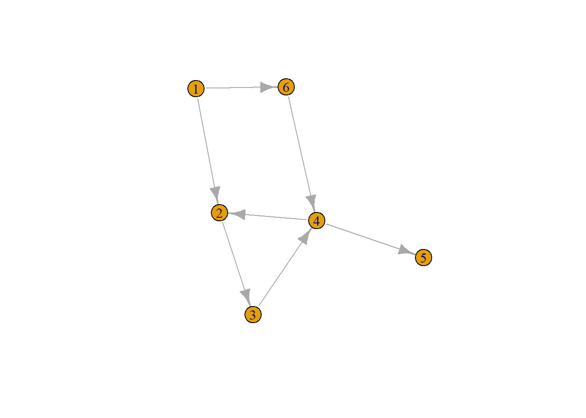
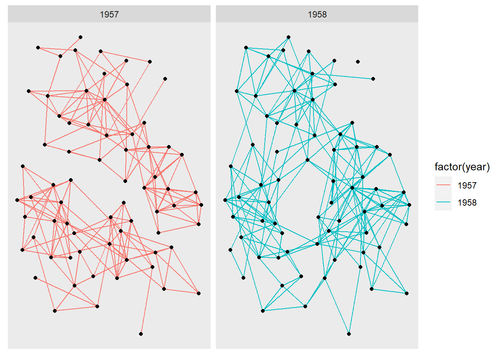

tidygraphパッケージについてまとまった日本語の情報がなかったのでメモ。
数少ない日本語情報は，「{tidygraph}と{ggraph}によるモダンなネットワーク分析」くらいしかない。基本的には公式vignetteやtidygraphを参考にする。
tidygraphはネットワークデータをtidyverseのノリで扱えるようにするパッケージだ。「エッジ」と「ノード」を持つネットワークデータは，特殊な扱い方が必要になるため，従来であればsnaやigraphというパッケージが用いられてきた。しかしこれらのパッケージは現在主流のtidyverseとの相性があまりよくない。tidygraphを用いれば，パイプ処理の中で中心性などの諸指標を算出してデータフレームに加えることができ，そのまま回帰モデルなどのモデリングに移行することができる。
以下ではsnaやigraphとの対応を確認しながら，tidygraphの使い方を見ていく。
snaでは隣接行列を直接扱うことができる。（入力は大変なので省略）
また辺リストの場合は「(ノード，ノード，エッジの重み)」の形でmatrixを作る。 正直言ってあまり書きたくない。
# 辺リスト
edgelist <-
matrix(c(1, 2, 1,
1, 3, 1,
2, 1, 1,
2, 3, 1,
4, 1, 1),
ncol = 3, byrow = TRUE)
# 隣接行列
adj_matrix <-
matrix(c(0, 1, 1, 0,
1, 0, 1, 0,
0, 0, 0, 0,
1, 0, 0, 0),
ncol = 4, byrow = TRUE)snaで扱えるようにするには，このmatrixに頂点数（ここでは“n”とする）を与える。attr()なんて初めて使ったかもしれない。
[,1] [,2] [,3]
[1,] 1 2 1
[2,] 1 3 1
[3,] 2 1 1
[4,] 2 3 1
[5,] 4 1 1
attr(,"n")
[1] 4他にも頂点に名前を付けたりできる。
igraphは独自のigraphクラスを用いるので，辺リストや隣接行列をグラフオブジェクトに変換する必要がある。
edgelist <-
matrix(c(1, 2,
1, 3,
2, 1,
2, 3,
4, 1),
ncol = 2, byrow = TRUE)
graph_from_edgelist(edgelist, directed = FALSE)IGRAPH b2e460e U--- 4 5 --
+ edges from b2e460e:
[1] 1--2 1--3 1--2 2--3 1--4IGRAPH b2e5bf7 D--- 4 5 --
+ edges from b2e5bf7:
[1] 1->2 1->3 2->1 2->3 4->1adj_matrix <-
matrix(c(0, 1, 1, 0,
1, 0, 1, 0,
0, 0, 0, 0,
1, 0, 0, 0),
ncol = 4, byrow = TRUE)
graph_from_adjacency_matrix(adj_matrix) IGRAPH b2f3e68 D--- 4 5 --
+ edges from b2f3e68:
[1] 1->2 1->3 2->1 2->3 4->1ここまでは小規模な隣接行列や辺リストから入力することを想定してきた。しかし通常分析で扱うのはデータフレームの形式である。データフレームからグラフオブジェクトに変換できるのはtidygraphの特徴といえる。
データフレームから入力する。データフレームの内の2列が辺リストの役割を果たし，それ以外が辺の重みやその他の共変量として用いられる。
列名をfrom, toで与える点に注意。
graph_data <-
tibble(
from = c(1, 1, 2, 2, 4),
to = c(2, 3, 1, 3, 1),
weight = c(1, 1, 1, 1, 1)
)
tidygraph::as_tbl_graph(graph_data, directed = TRUE, weight)# A tbl_graph: 4 nodes and 5 edges
#
# A directed simple graph with 1 component
#
# Node Data: 4 x 1 (active)
name
<chr>
1 1
2 2
3 4
4 3
#
# Edge Data: 5 x 3
from to weight
<int> <int> <dbl>
1 1 2 1
2 1 4 1
3 2 1 1
# ... with 2 more rowsまた，tidygraphはigraphのラッパーであるため，igraphオブジェクトから作成することもできる。
adj_matrix <-
matrix(c(0, 1, 1, 0,
1, 0, 1, 0,
0, 0, 0, 0,
1, 0, 0, 0),
ncol = 4, byrow = TRUE)
graph_from_adjacency_matrix(adj_matrix) %>%
tidygraph::as_tbl_graph()# A tbl_graph: 4 nodes and 5 edges
#
# A directed simple graph with 1 component
#
# Node Data: 4 x 0 (active)
#
# Edge Data: 5 x 2
from to
<int> <int>
1 1 2
2 1 3
3 2 1
# ... with 2 more rows以下ではigraphとtidygraphにしぼって解説する。tidygraphのオブジェクトはigraphにも対応しているため，使いやすい方を場面に応じて使っていけば良い。
graph_data <-
tibble(
from = c(1, 1, 2, 3, 4, 4, 6),
to = c(2, 6, 3, 4, 2, 5, 4),
length = c(1, 2, 1, 2, 9, 1, 1)
) %>%
as_tbl_graph(directed = TRUE, weighted = length)
plot(graph_data)
igraph::distancesmode = 'out'は，有向グラフの時のみ必要。
1 2 3 4 6 5
1 0 1 2 2 1 3
2 Inf 0 1 2 Inf 3
3 Inf 2 0 1 Inf 2
4 Inf 1 2 0 Inf 1
6 Inf 2 3 1 0 2
5 Inf Inf Inf Inf Inf 0tidygraph::node_distance_from``tidygraph::node_distance_to距離の情報をデータフレーム上に残し，次の解析に利用する場合，距離行列の形で出てきてしまっては不便である。そこでtidygraphではigraph::distancesのラッパーが用意されている。
*_fromは引数として与えたnodeからデータフレーム上の各nodeまでの距離を算出し，*_toはデータフレーム上の各nodeから引数として与えたnodeまでの距離を算出する。
なお，引数として与えるnodeはname列の文字列ではなく，node番号であることに注意。
graph_data %>%
mutate(
distance_from_1 = node_distance_from(1, mode = 'out'),
distance_to_1 = node_distance_to(1, mode = 'out'),
distance_from_4 = node_distance_from(4, mode = 'out'),
distance_to_4 = node_distance_to(4, mode = 'out'),
)# A tbl_graph: 6 nodes and 7 edges
#
# A directed simple graph with 1 component
#
# Node Data: 6 x 5 (active)
name distance_from_1 distance_to_1 distance_from_4 distance_to_4
<chr> <dbl> <dbl> <dbl> <dbl>
1 1 0 0 Inf 2
2 2 1 Inf 1 2
3 3 2 Inf 2 1
4 4 2 Inf 0 0
5 6 1 Inf Inf 1
6 5 3 Inf 1 Inf
#
# Edge Data: 7 x 3
from to length
<int> <int> <dbl>
1 1 2 1
2 1 5 2
3 2 3 1
# ... with 4 more rows$vpath
$vpath[[1]]
+ 3/6 vertices, named, from 40bd1c1:
[1] 1 6 4
$epath
NULL
$predecessors
NULL
$inbound_edges
NULL無限大（到達不能）を除いて，平均距離を計算する。
[1] 1.777778また，tidygraph::graph_mean_distというラッパーが存在する。
# A tbl_graph: 6 nodes and 7 edges
#
# A directed simple graph with 1 component
#
# Node Data: 6 x 2 (active)
name mean_dist
<chr> <dbl>
1 1 1.78
2 2 1.78
3 3 1.78
4 4 1.78
5 6 1.78
6 5 1.78
#
# Edge Data: 7 x 3
from to length
<int> <int> <dbl>
1 1 2 1
2 1 5 2
3 2 3 1
# ... with 4 more rowsイマイチどう使うのかわからない…
ここまではノード同士の距離や経路を主な問題としてきたが，ここからはよりネットワークの全体像を掴むうえで重要となる指標を算出する。主なものとして，
について解説する。
また，ネットワークの階層的構造における，連結性，階層性，効率性，最小上界性についても触れる。
ここではggraphパッケージのhighschoolデータを用いる。
これはsnaパッケージのcolemanデータと同じである。
社会学者ジェームズ・コールマンによる73人の男子高校生の友人ネットワークであり，1957年秋と1958年春に調査した2回分のデータが辺リストで格納されている。
# A tibble: 506 x 3
from to year
<dbl> <dbl> <dbl>
1 1 14 1957
2 1 15 1957
3 1 21 1957
4 1 54 1957
5 1 55 1957
6 2 21 1957
7 2 22 1957
8 3 9 1957
9 3 15 1957
10 4 5 1957
# ... with 496 more rowscoleman <-
highschool %>%
group_nest(year) %>%
mutate(data = map(data, ~{as_tbl_graph(., directed = TRUE)}))とりあえず描写
library(ggraph)
ggraph(highschool %>% as_tbl_graph(), layout = 'kk')+
geom_edge_link(aes(color = factor(year)))+
geom_node_point()+
facet_edges(~year)
あるノード群があって，その中でどれだけエッジが張られているかを表す指標が密度である。
密度は， \[
\frac{エッジの数}{ノード群の最大エッジ数}
\] として定義される。
無向グラフの場合， \[
頂点数:n，エッジ数:m
\] \[
density = \frac{m}{n(n-1)/2}
\] として定義される。
有向グラフの場合， \[
density = \frac{m}{n(n-1)}
\]
となる。
コールマンデータで算出すると以下のようになる。
# A tibble: 2 x 3
year data density
<dbl> <list> <dbl>
1 1957 <tbl_grph> 0.0503
2 1958 <tbl_grph> 0.0561密度が増加しているので，関係の総量は増加したと言える。
ネットワークにおいて，頂点\(i\)と頂点\(j\)の間，および頂点\(j\)と頂点\(k\)，さらに頂点\(i\)と頂点\(k\)の間に関係がある場合，関係が推移的（transitive）であるという。三角形のイメージ。
推移性は推移的な関係が成り立っている比率のことを指す。
coleman %>%
mutate(density = map_dbl(data, edge_density),
transitivity = map_dbl(data, transitivity))# A tibble: 2 x 4
year data density transitivity
<dbl> <list> <dbl> <dbl>
1 1957 <tbl_grph> 0.0503 0.440
2 1958 <tbl_grph> 0.0561 0.398これによると推移的な関係の割合は減少している。
相互性は有向グラフにおいて，相互に有向辺を持つ関係（両想い）がどれくらいの割合を占めているかという指標のこと。
基本的には相互に有向辺がある場合のみを相互性にカウントする。
場合によっては，相互に有向辺がない場合にも相互性にカウントすることもある。例えば「互酬性の規範」について考える時，「互酬性の規範」が成り立っていない場合というのは，「aからbに有向辺があり，bからaには有向辺がない」場合であり，このときは有向辺がない場合も相互性にカウントしたほうが都合が良い。
coleman %>%
mutate(density = map_dbl(data, edge_density),
transitivity = map_dbl(data, transitivity),
reciprocity = map_dbl(data, reciprocity))# A tibble: 2 x 5
year data density transitivity reciprocity
<dbl> <list> <dbl> <dbl> <dbl>
1 1957 <tbl_grph> 0.0503 0.440 0.510
2 1958 <tbl_grph> 0.0561 0.398 0.464now loading…